Kilimark · Ponni
Atchaya Ponni
அட்சயா பொன்னிSoft, separate grains for everyday meals.
5 kg10 kg26 kg
Sastha Ayyanar Modern Rice Mill's
Ponni, double boiled and idli rice, milled and packed in-house at our Madurai mill. We supply retailers, wholesalers and hotels across Tamil Nadu and beyond, with consistent quality in every sack.
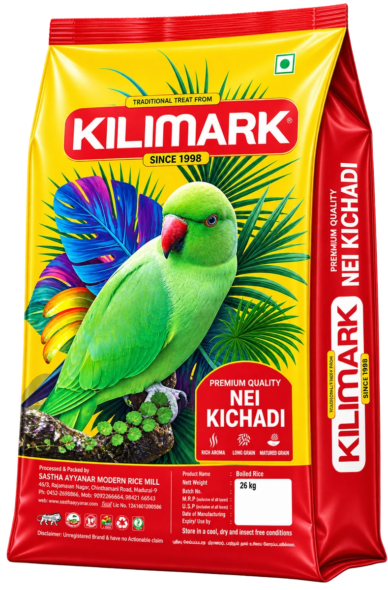
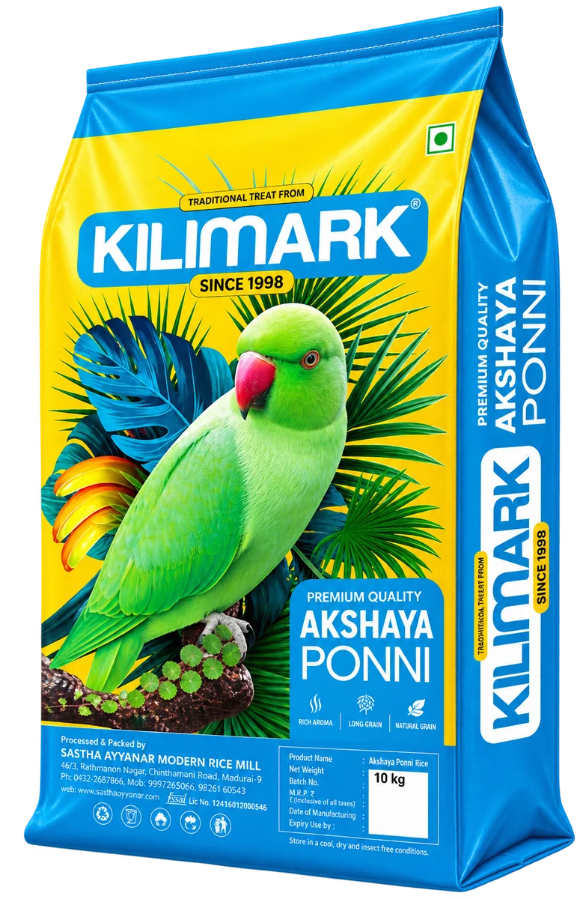
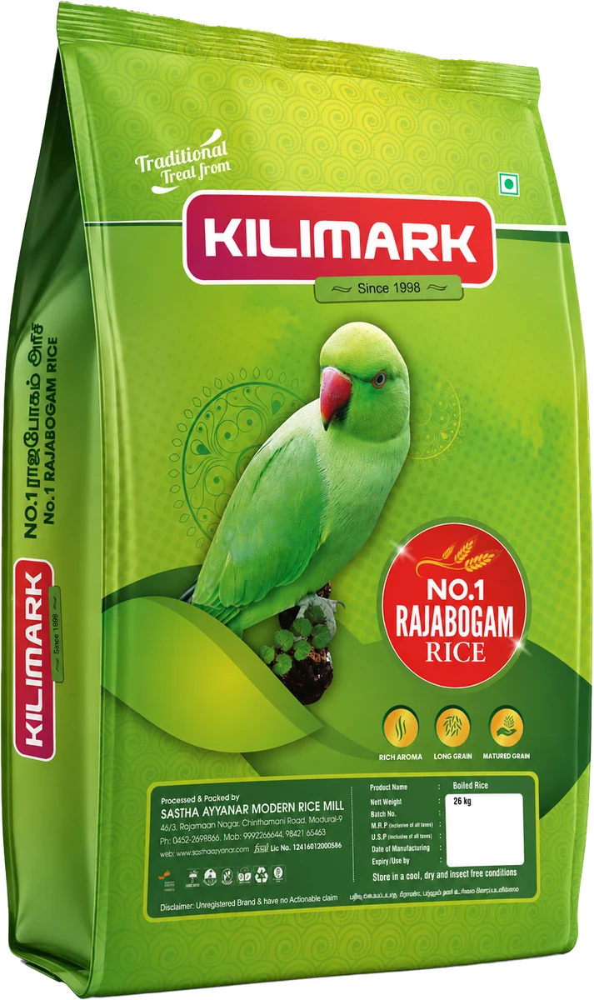
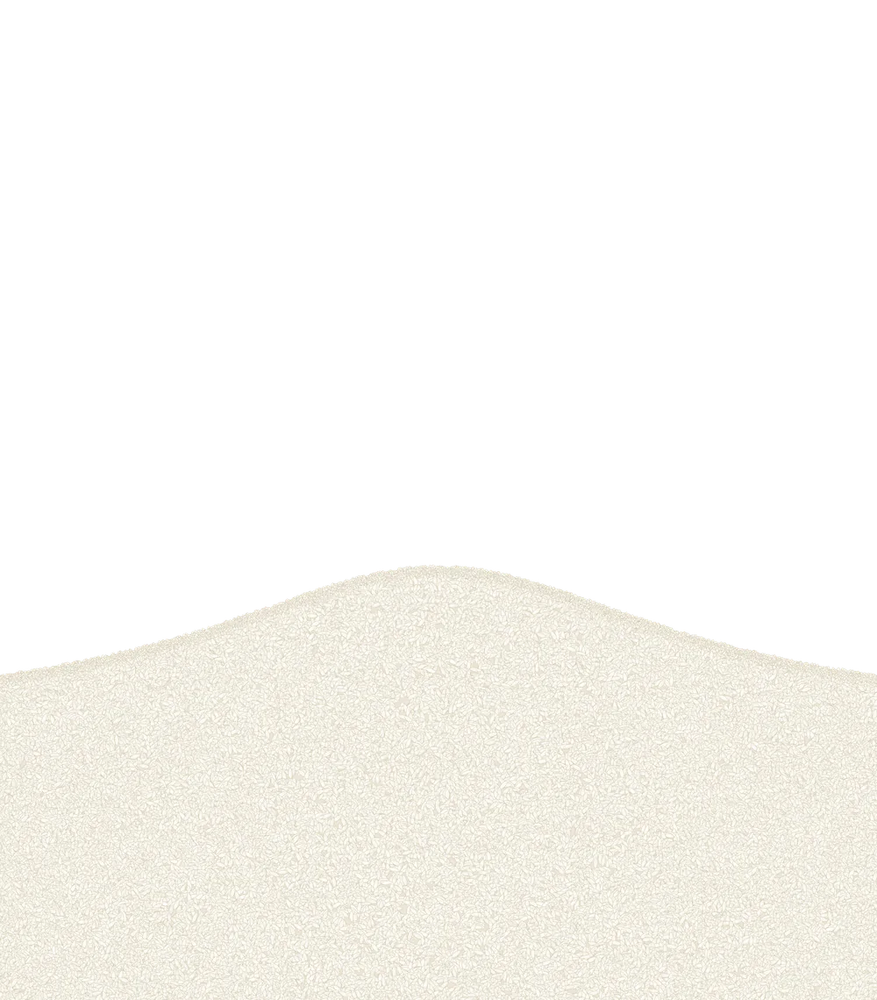
Started as a rice shop in Thathaneri.
Automated since 2012, so volume never costs consistency.
From a family's monthly bag to a hotel's daily sack.
The top MSME rating for quality and zero waste, awarded in 2024.
Products
Kilimark, Ammu, Sastha Gold and Super Gold rice, all milled and packed at our own mill. Supplied in 5 to 26 kg sacks for retail, wholesale and food service.
Soft, separate grains for everyday meals.
Short grains for biryani, ghee rice and kichadi.
Aged Ponni that cooks firmer and fluffier. Our premium sack.
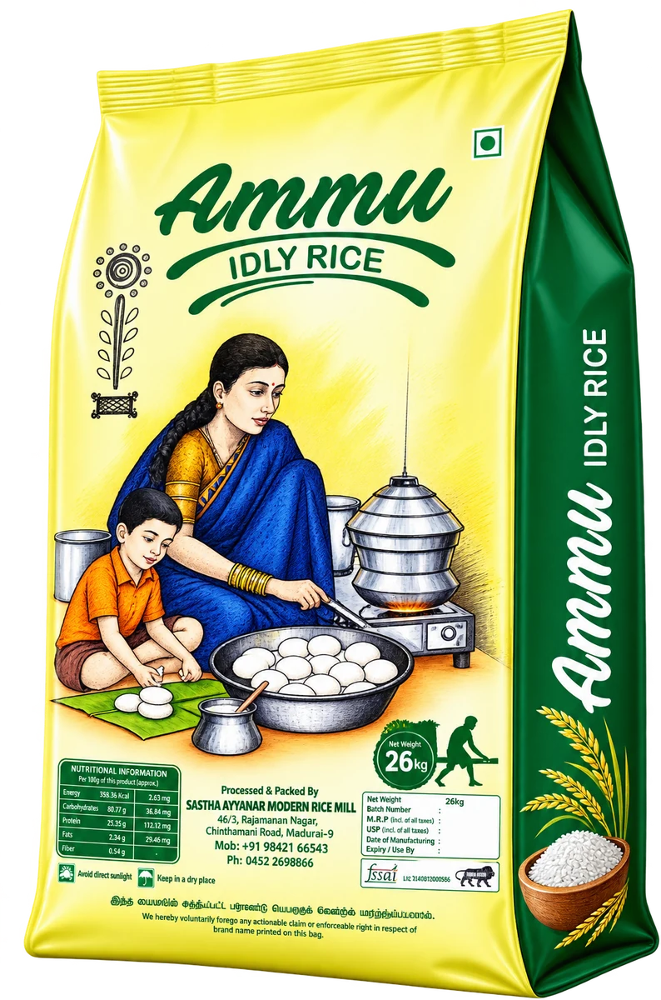
Soaks evenly and ferments well, for soft idli and crisp dosa.
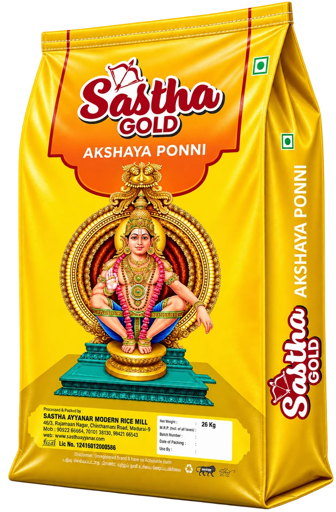
Atchaya Ponni under our Sastha Gold label.
Variety and pack details to be added.
Pricing depends on volume and frequency. Double boiled and broken rice are also available in bulk.
Ask for pricesPack artwork supplied by Kilimark. Super Gold pack photo to come.
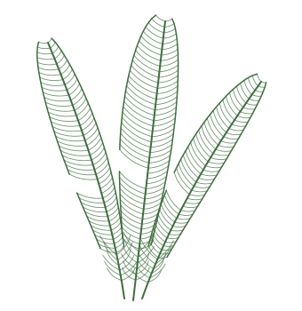
Quality
That's what our customers ask rice to be. So that's what we check for, batch after batch.
Good rice can't be made from poor paddy. We reject it before it enters the mill.
The Government of India's highest MSME rating for quality and zero waste, earned in 2024.
Every sack is milled and packed under a food safety licence.
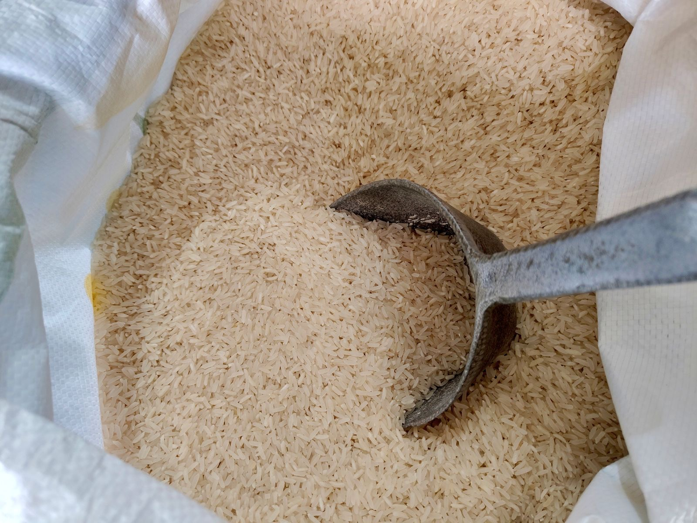
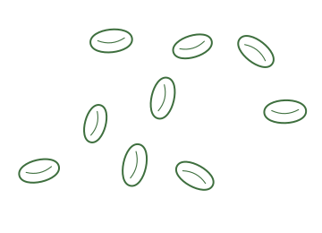
Paddy to pack
We buy only paddy that passes our check. It is cleaned, parboiled and dried, then milled, sorted and packed by machine. The same steps and the same settings, every day.
Every grain of Kilimark rice is milled, checked and packed here, at our own mill in Madurai.
Our story
P. T. Janakiraman started behind the counter of a rice shop in Thathaneri, listening to what families expected from every sack. In 1998 he began milling to deliver exactly that.
Source carefully. Process responsibly. Deliver consistently.
How we've worked since 1998Today he runs the mill with his son, Himalesh, who joined after his MBA to take Kilimark beyond Madurai.
Why a parrot
In Madurai, the green parrot in Goddess Meenakshi's hand is said to carry devotees' prayers to her, word for word. That parrot is on every Kilimark sack. It stands for three things we will not change.
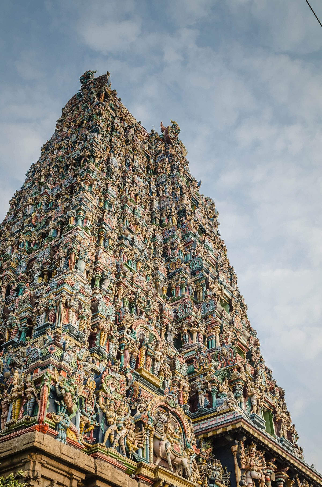
Photo: Ashwin Kumar, CC BY-SA 2.0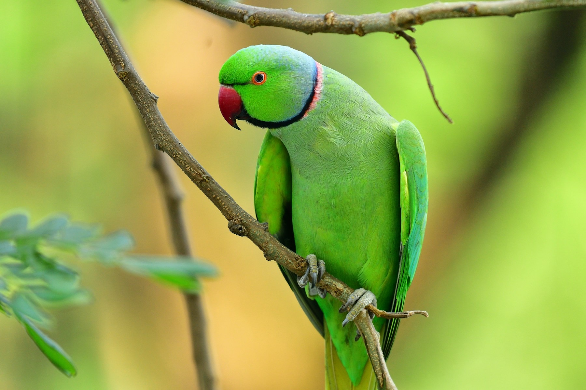
The parrot of our city's goddess, on rice milled in our city since 1998.
What we promise across the counter is what reaches your kitchen. No surprises in the sack.
A parrot repeats what it hears. Every Kilimark sack repeats the last one.
Pick your rice
Idli needs rice that ferments. Biryani needs grains that stay apart. Tell us what you're cooking.
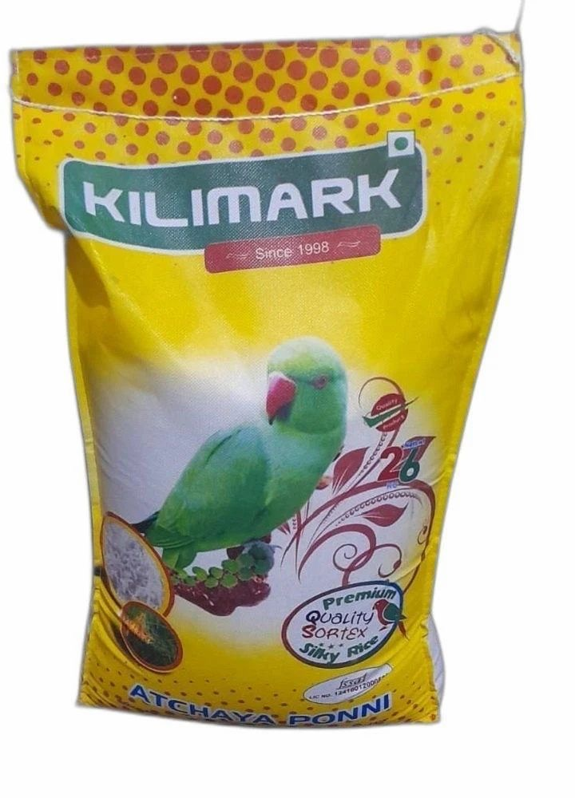
Soft grains that stay separate and don't clump, meal after meal.
Enquire about Atchaya PonniOur customers
Placeholder quotes. Real ones will come from Kilimark's customers.
Visit us
Buy by the bag or the sack, straight from the mill.
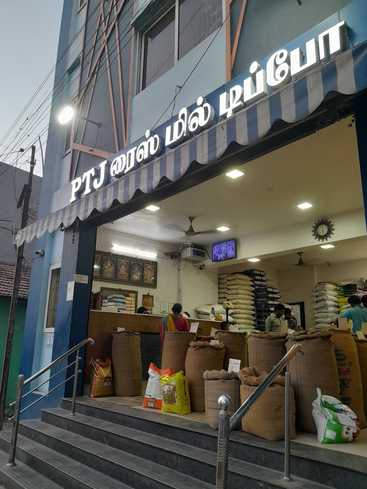